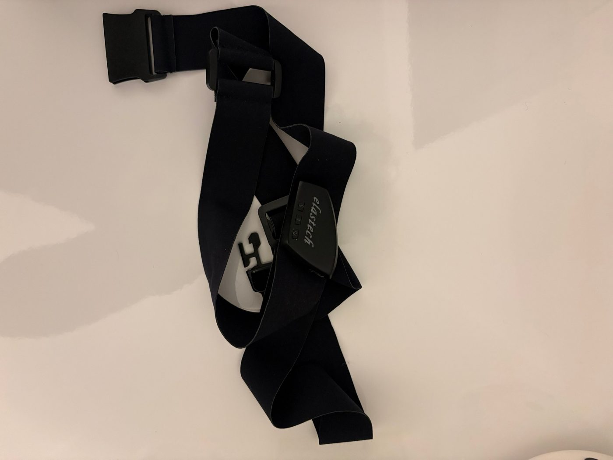
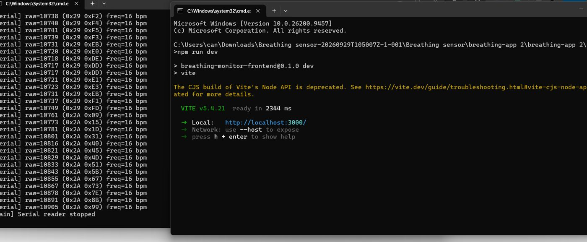
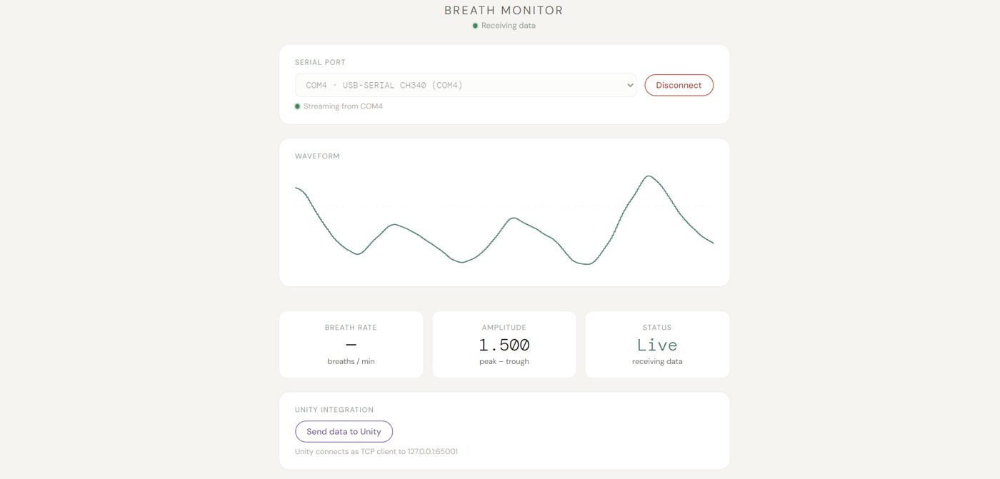
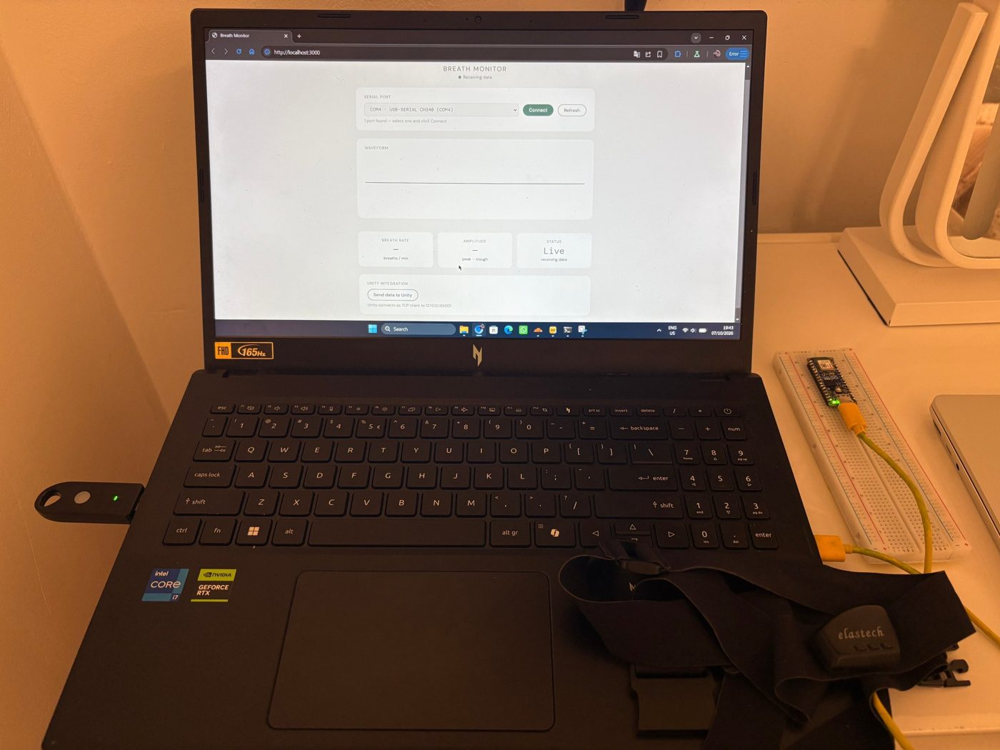
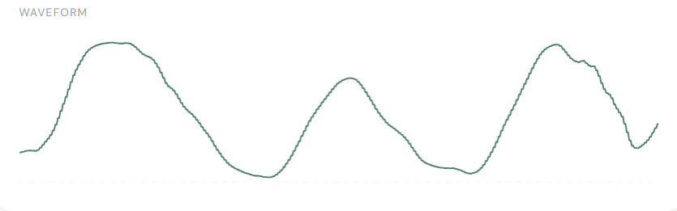
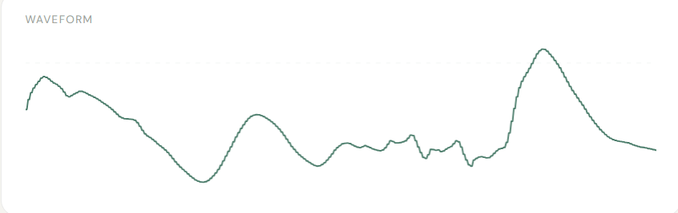
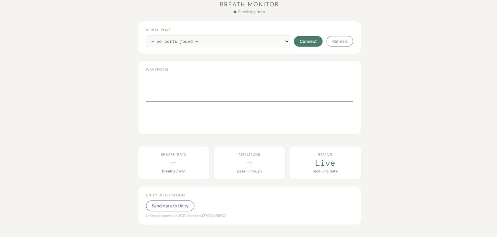
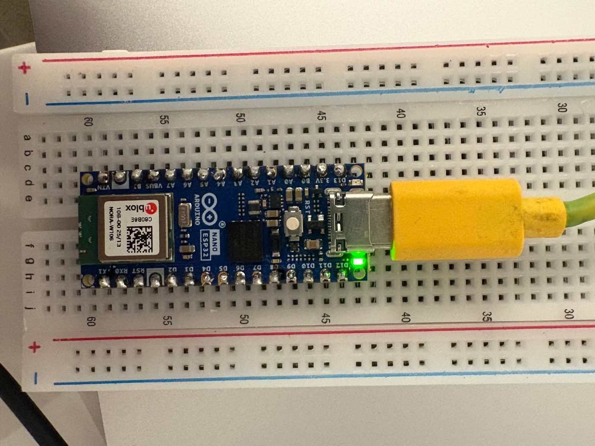
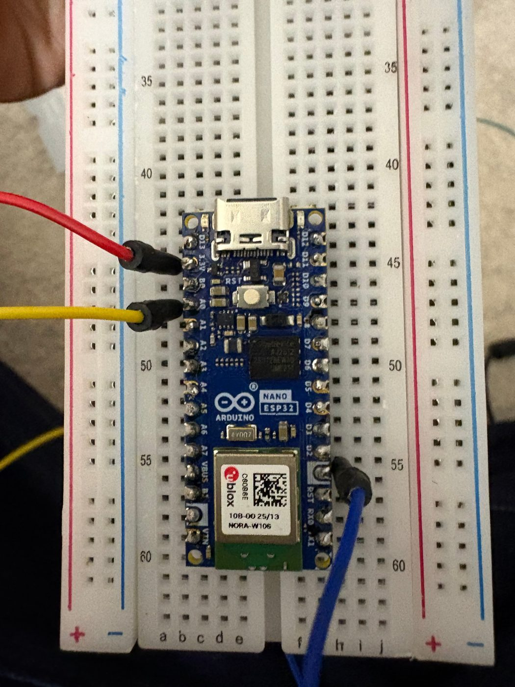
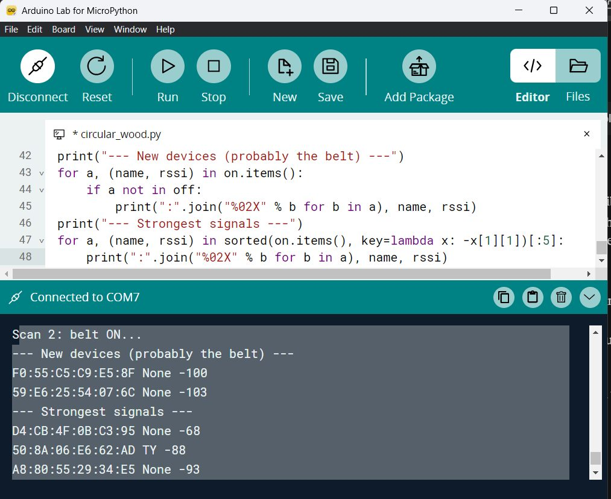

Sprint 1
DevLog Bio-Reachy (zonder de Reachy)
Waar gaat het over?
Voor de Dark Tech Studio werk ik met mijn team aan Bio-Reachy, voor opdrachtgever Bin Yu van Digital Life (HvA). Een sociale robot (Reachy) leest lichaamssignalen van de gebruiker, zoals hartslag en ademhaling, en reageert daarop. Het "dark" aspect: de gebruiker merkt dat de robot weet hoe hij of zij zich voelt.
De robot heeft drie opties:
- Mirror: de robot spiegelt het gedrag van de gebruiker.
- Interpret: de robot benoemt wat hij ziet, bijvoorbeeld "je lijkt gestrest".
- Adapt: de robot past toon, tempo of woordkeuze aan.
Doel van sprint 1: een werkende pipeline van sensor naar verwerking. Mijn deel is de ademhalingssensor.
Mijn team
- Can (ik): ademhalingssensor.
- Niek: helpt mij met testen van de ademhalingssensor en doet AI-onderzoek.
- Rio: pulssensor.
- Dipin: ideeën en testen bij de pulssensor.
- Yusuf: AI-onderzoek.
Tijdlijn
- di 22 sep: introductie met Bin Yu (16:00).
- di 29 sep: we krijgen de sensoren en hebben een beter idee van wat nodig is. De riem draait dezelfde dag al.
- wo 30 sep en do 1 okt: ademhalingstests.
- 3 en 4 okt: ik probeer de riem op de Arduino Nano ESP32 te laten werken en loop vast op een error.
- Begin oktober: BLE-scan, en ik meld het probleem bij mijn team via Teams.
- Nog niet (volledig) gepland: sprintreview met Bin Yu. We hebben hem geïnformeerd.
Het eerste gesprek met Bin Yu
Wat ik uit de notities van de introductie haal:
- Ons deel is het "dark" aspect: mensen merken dat de robot weet hoe zij zich voelen. Robots kunnen al lang emoties herkennen via gezichten. Wat nog mist is de fysiologie van de gebruiker.
- Sprint 1: de hele pipeline van sensor naar verwerking werkend krijgen, een echt gesprek met de robot voeren en een baseline, stijging en daling meten.
- Sprint 1 kan in twee groepen: een prototype en onderzoek naar concepten. Sprint 2 gaat over dataverwerking en de modi, sprint 3 over finetunen.
- De documentatie moet goed zijn, want de resultaten worden mogelijk gepubliceerd.
- Wekelijks overleg op dinsdag.
Verder kwam in de chat met Bin: de simulatiemodus van Reachy Mini werkt bij ons al. Een fysieke robot probeert Bin te regelen.
Mijn startpunt
De code voor de sensor heb ik niet zelf geschreven. Bin Yu stuurde me een breathing-app (Python-backend en frontend) en een ademhalingsriem van Elastech met een USB-ontvanger. Mijn taak was om dit werkend te krijgen en uit te zoeken hoe ik de data kan gebruiken voor het project.

Hoe de keten werkt
De riem stuurt de ademhaling via Bluetooth naar de USB-dongle. Op mijn laptop verschijnt die dongle als COM-poort. De Python-backend leest die poort uit en stuurt de data door naar de browser, waar ik dan de metingen kan uitvoeren.
Riem → Dongle (COM) → Python-backend → React-app
De riem zendt pakketjes van 5 bytes, die beginnen met 0xFA en eindigen met 0xAA. In de terminal zie ik de ruwe waarden binnenkomen.
De app draaiend krijgen op Windows
De app is gemaakt op een Mac, dus op Windows moest ik een paar dingen anders doen:
- Python en Node.js installeren.
- De map
node_modulesvan de Mac verwijderen en opnieuw aanmaken metnpm install. - Eerst testen in demomodus zonder riem, om te zien of de hele keten werkt.
Daarna de riem aanzetten, de juiste COM-poort kiezen in de browser en verbinden.

Het resultaat
De app ontvangt data van de riem en tekent de ademhaling live als golfvorm. De pieken en dalen zijn in- en uitademen.


Eerste baselinemeting
De opdracht vraagt om begrip in de baseline van de ademhaling en om een vergelijking tussen stilzitten en praten. Ik heb beide situaties gemeten met de riem.


Wat ik zie: bij stilzitten zijn er drie ademhalingen die qua vorm en hoogte op elkaar lijken. Tijdens het praten zijn de golven veel onregelmatiger. De ademhalingen verschillen in grootte, er zijn kleine rimpels in het dal en er is een grote piek.
Dit laat wel zien dat de situatie uitmaakt voor wat je een baseline noemt. Dat past bij de vraag van Bin of de baseline beter tijdens het praten gemeten kan worden. Ik moet de metingen herhalen.
Wat niet werkte
Soms stond er "no ports found" in de app. Dan was de dongle niet gekoppeld aan de riem of niet herkend. Een COM-poort kan ook maar door één programma tegelijk gebruikt worden.

Breath rate blijft leeg. In de screenshots toont de app wel een amplitude, maar bij "breath rate" staat alleen een streepje. Dit moet ik nog uitzoeken.
De Arduino Nano ESP32
Ik wilde proberen of de Arduino Nano ESP32 de riem zelf kan uitlezen, zodat de pc niet nodig is (kan misschien later een wearable zijn). De Nano draait MicroPython, heeft Wi-Fi en Bluetooth en past daarmee goed bij een kleine, draagbare setup.


Technische uitdaging: de Nano ziet de riem niet
De app zelf kan niet op de Nano draaien. De app is te zwaar voor MicroPython, en de dongle is een USB-apparaat voor een pc, terwijl de Nano geen USB-host is.
Dus probeerde ik of de Nano de riem rechtstreeks via Bluetooth kan vinden. De Nano ondersteunt alleen Bluetooth Low Energy (BLE). Ik zocht online naar Bluetooth-scancode, paste die een beetje aan voor MicroPython en deed de scan twee keer. Eerst met de riem uit, daarna met de riem aan, vlak naast de Nano.

Resultaat: er verscheen geen apparaat dat bij de riem past. De "nieuwe" apparaten zaten op -100 en -103 dBm. Dat is echt veel te zwak voor een riem op 30 cm afstand, en ze stonden al in de eerste scan. De rest waren apparaten uit mijn kamer.
Overleg met mijn team over de Arduino
Dit kwam uit het gesprek met mijn team:
- De chip op de Nano kan fysiek alleen BLE. We houden de Nano voorlopig voor een wearable die we kunnen testen.
- We bespreken de situatie later met Bin Yu, want er is nu niet veel dat we kunnen doen.
- Een idee: een gewone ESP32 gebruiken, want die heeft klassieke Bluetooth en BLE. Het gaat waarschijnlijk om een ESP32-WROOM (4 MB). Dit moeten we nog precies bespreken.
- Een ander idee: de dongle met draden op de UART-pinnen van een ESP32 aansluiten. De dongle kan op 5 V werken en een ESP32 op 3,3 V, dus dat moeten we eerst uitzoeken.
Eigen aantekening: MicroPython op de ESP32 ondersteunt alleen BLE. Voor klassieke Bluetooth zouden we dus waarschijnlijk een andere programmeeromgeving moeten gebruiken, bijvoorbeeld Arduino (C++).
Wat ik hieruit leer
- De pc als tussenstation werkt zeker: de pc leest de riem uit en stuurt de waarden door naar een bord of de robot.
- Een gewone ESP32 kan de riem misschien meteen uitlezen, maar alleen als de riem klassieke Bluetooth via een verbinding gebruikt. Dat moet ik nog bevestigen.
- De situatie (stilzitten of praten) maakt uit voor de ademhaling. Dat heeft gevolgen voor hoe we de baseline bepalen.
Waar ik nog tegenaan loop
- De Reachy-robot is er nog niet. Bin Yu probeert een fysieke robot te regelen. Misschien kunnen we tijdelijk een Reachy van de UvA lenen.
- Ik weet nog niet of de riem BLE of klassieke Bluetooth gebruikt.
- Welke ESP32 we precies gebruiken, moeten we nog bespreken.
- De baselinemeting is nog maar een test.
- De sprintreview met Bin Yu is nog niet gepland.
Mijn feedbackvraag aan de groep
- De Nano kan alleen BLE en de riem lijkt klassieke Bluetooth te gebruiken. Welke route kiezen we voor de ademhalingsdata, de pc als tussenstation of een gewone ESP32 die de riem rechtstreeks leest?
- Waar moet de baseline op gebaseerd zijn: stilzitten of het praten tijdens een kennismaking met de robot? Mijn eerste meting laat een duidelijk verschil zien.
Volgende stappen
- Navraag bij Elastech over het protocol.
- Met mijn team beslissen welke ESP32 we gebruiken en of we daarvoor een andere programmeeromgeving gebruiken.
- De baselinemeting herhalen en uitzoeken waarom de breath rate leeg blijft.
- De ademhalingsdata koppelen aan de pulssensor en de robot.
- Een datum plannen voor de sprintreview met Bin Yu.
- Hopelijk testen maken met de robot.